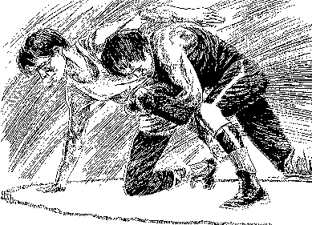

|
Wrestling With Sin in the Judgment Hour
William Diehl
Those who accuse the evangelical Christians of teaching "cheap grace" are so wrapped up in salvation by character development that they cannot admit that they are still "wretched" as Paul states he is in Romans 7. For the sinless perfectionists to admit that Paul is speaking in Romans 7 of the struggle within the heart of the believing Christian would be to admit that believers are still wrestling with the "Old Man" of the sinful nature even until the coming of the Lord. They fear that this admission would allow the believer to continue to willfully live to please the sinful carnal nature and still claim to be covered by the imputed righteousness of Christ and on the narrow way to heaven.
The fact is of course that those who are trusting only in the sinless life and atoning death of our Lord receive the gift of the Holy Spirit in their hearts and will begin to hate the sin that remains in their hearts, because sin is what took the precious life of their Lord. Thus the believer does not continue to SERVE sin in his life but rather begins to resist and wrestle against the sin that so easily besets us. But even though we wrestle against sin in our lives, we can never claim to have a perfect character or to be without sin in this life. We sin even in our good works and fall short of the life of Christ in all of our walk with the Lord. Our Christian love is not nearly fervent enough and our tender sympathies for our fellow man are only the faintest reflection of the love that our Lord revealed in His life as He walked the dusty streets of Palestine as the Son of Man.
Do believers "keep the commandments of God"? The answer is yes and no. Yes, we seek to fashion our lives and characters after the spirit and the letter of the glorious righteousness of God as revealed in the Law of God. But at the same time we must all admit that our sanctification and characters fall far short of the righteousness of the Law and the righteousness that was revealed in the life of Jesus. We wrestle against sin and resist sin every moment as the Spirit motivates us to both WILL and to DO the will of God. We, with all creation, groan and struggle as we resist our adversary the Devil and await the coming of our Lord and Savior in the clouds of heaven. The testimony of the believer is that he or she is "perfect" only by virtue of the imputed righteousness of Christ and that our sanctification falls far short of what it should be as we "confess our faults to one another". This is what it means to fully reflect the image of Jesus in our lives. We reflect His image as we grow up into our Head and at the same time trust only in His perfect imputed righteousness.
The unbeliever does not have this conflict because he does not have two natures, he only serves the flesh and sin. He does NOT delight to do the will of God in his mind. He is not torn between two natures. He only lives to serve Satan and the lust of the flesh, the lust of the eye, and the pride of life. Amen
|